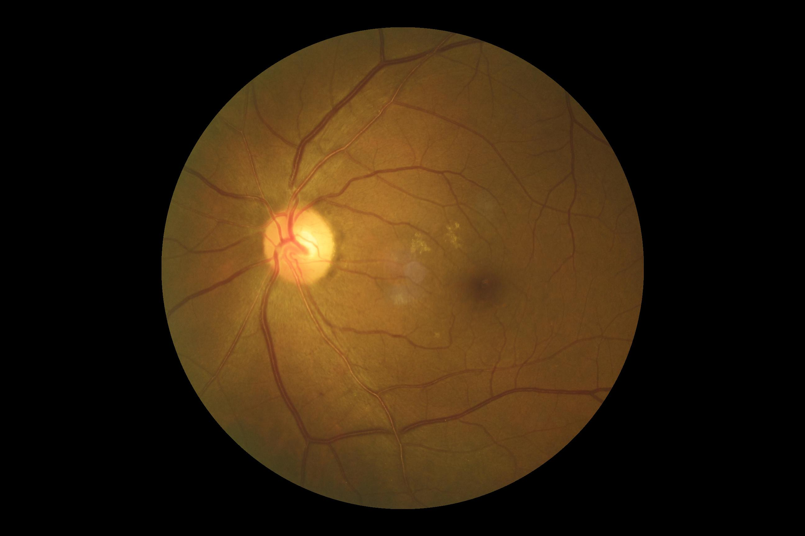
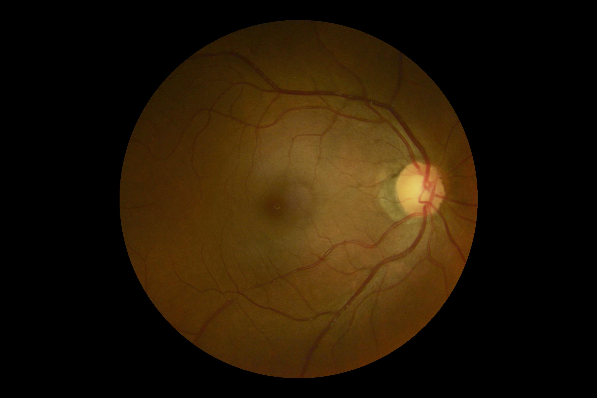
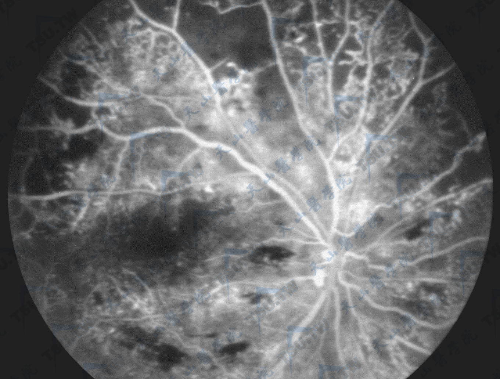
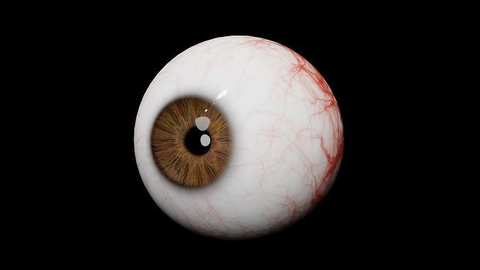

AI眼科图像诊断
返回首页
专业AI分析
基于深度学习模型，对眼部图像进行智能分析
隐私保护
所有图像数据经加密处理，确保您的隐私安全
快速诊断
秒级响应，为您提供及时的诊断建议
拍摄示例
正确示例1

光线充足,角度正确
正确示例2

清晰度高,位置合适
错误示例1

光线不足,模糊
错误示例2

与眼底照片无关
图像上传
拍摄建议：
- 选择光线充足的环境
- 保持手机稳定,避免晃动
- 确保眼睛区域清晰可见
- 避免使用闪光灯
左眼
点击或拖拽上传左眼图像
支持 jpg、png 格式右眼
点击或拖拽上传右眼图像
支持 jpg、png 格式
每日护眼小贴士
每日更新
建议每隔1小时眺望远处20秒
保持45-50厘米的电脑使用距离
适当补充黄素等营养素
定期进行眼部放松按摩
最新研究进展
2024-03
新型人工智能算法在青光眼早期筛查中的应用研究
2024-02
基于深度学习的视网膜图像分析新方法
预防保健知识
科学用眼
合理安排工作用眼时间，保持正确姿势和适当照明
营养搭配
均衡饮食，补充维生素A、C、E等营养素